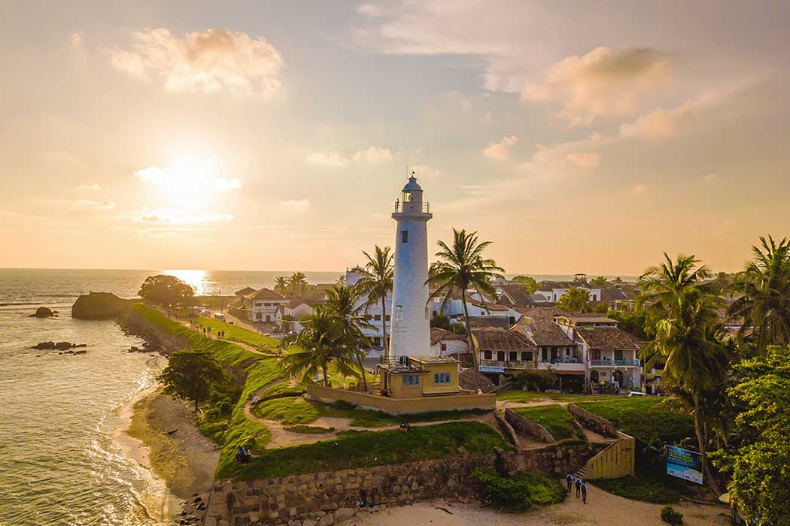
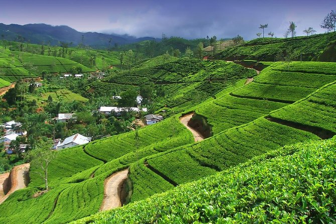
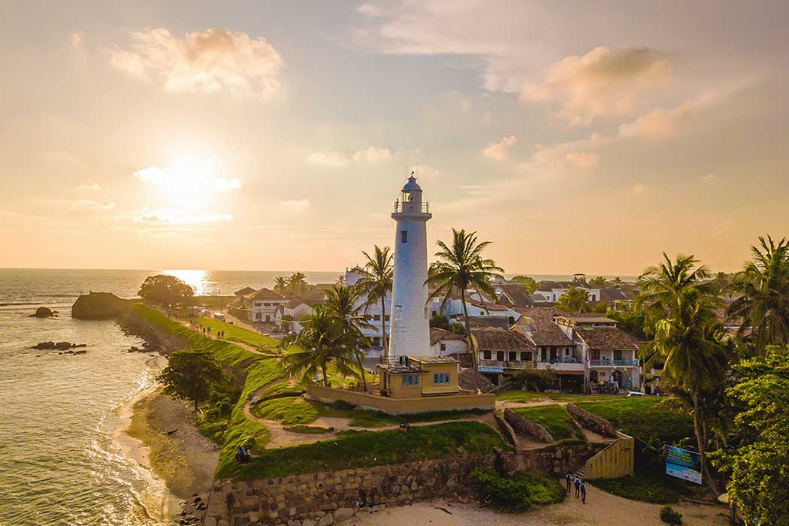
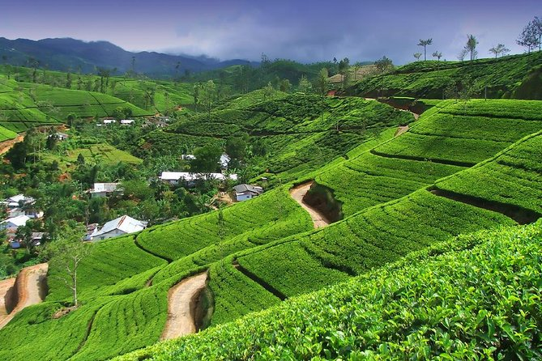
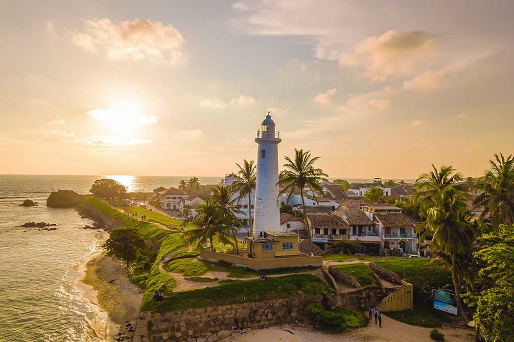
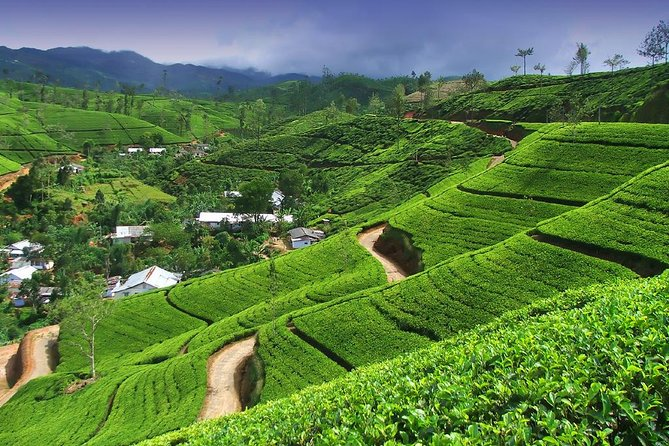

Destination Highlights 🏝️
 



"A Land of Timeless Beauty and Endless Adventure!"
"Discover, Experience and Navigate Sri Lanka Like Never Before!"
Sri Lanka, often referred to as the "Pearl of the Indian Ocean," is a destination rich in history, culture and breathtaking natural beauty. From its stunning beaches and lush tea plantations to ancient temples and vibrant cities, the island offers an unforgettable experience for every traveler. Whether you're seeking adventure in the misty mountains, exploring UNESCO World Heritage sites or indulging in world-renowned Sri Lankan cuisine, this tropical paradise has something for everyone. Plan your journey today and immerse yourself in the warmth and hospitality that make Sri Lanka truly unique.

